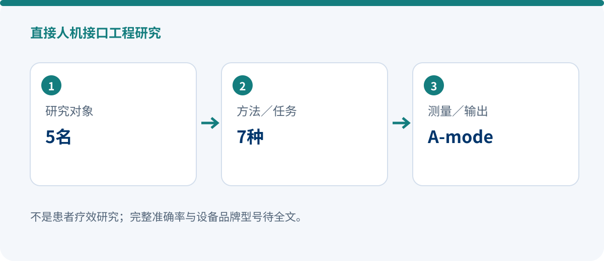

A-mode ultrasound for a soft hand exoskeleton: human–machine interfacing under active and passive conditions
HUMAN–MACHINE INTERFACE ENGINEERING
Ultrasound-Based Human–Machine Interfacing for Soft Hand Exoskeletons under Assisted and Passive Conditions
Bruno Grandi Sgambato, Juan C. Maldonado-Mejía, Tristan Wen Jie Choo, Marcela Múnera, Camilo A. R. Díaz, Majid Taghavi, Dario Farina, Carlos A. Cifuentes
2026 11th IEEE RAS/EMBS International Conference on Biomedical Robotics and Biomechatronics, 495–500
DOI: 10.1109/BIOROB66782.2026.11681602 · Original record
5 healthy participants | 7 grasps | HMI study

Research design
The study examines how A-mode ultrasound signals from muscle/the forearm might control a soft hand exoskeleton and compares human–machine interface performance under active and passive conditions. Healthy participants performed seven grasp tasks.
Available sources do not verify the complete cross-validation procedure, accuracy values, or device brand/model. Only the research question, population and tasks are therefore reported; figures such as 83.8% or 96.0% from other papers are not imported.
Key findings
- The verified output is an exploration of A-mode-ultrasound-based grasp-intent recognition under active and passive conditions.
- Five healthy participants and seven grasps constitute small-sample engineering validation, not evidence of robustness in clinical populations.
- Full accuracy and statistical results await the full text; no quantitative performance claim is made here.
Why it matters
A-mode ultrasound offers an intention-sensing pathway distinct from surface EMG. For soft hand exoskeletons, its value lies in exploring alternative HMI signals; translation from healthy-volunteer experiments to everyday patient use requires clinical usability, robustness, safety and longitudinal validation.
Evidence boundaries
- Only five healthy participants were studied; this is not patient-efficacy evidence.
- Full text pending: device brand/model and complete performance metrics remain unverified.
- The study is not counted here as a confirmed SYREBO-device experiment.
Source and verification
Device names, sample accounting and numerical results follow the verified source scope stated above. No missing values are inferred.